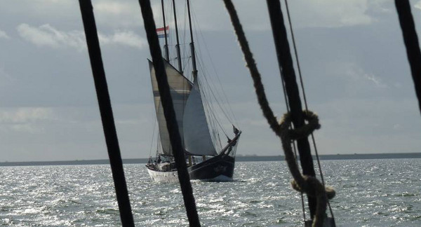
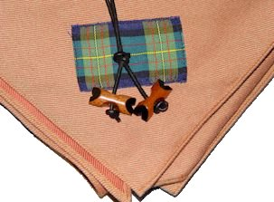
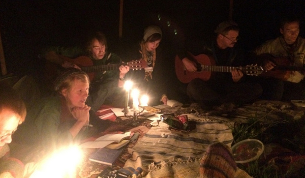

21Sep
Wasser, Segeln, Hafen - Was will man mehr?!
Junge13 Jahre
Ich war in der 1. Woche der Herbstferien auf einer Segeltour. Also ich muss zugeben, dass mir diese eine Woche viel zu kurz war! Ich fand es soo spannend zu segeln, denn jeden Tag raus auf die See, Segel hissen und das stürmische Wetter mit erleben.
Wir, der Stamm Luchs, haben mit anderen Pfadfindern Lieder zur See raus gebrüllt, coole Bilder hab ich mit meinen Kameraden geschossen und jeden Abend hielten wir in verschiedenen Häfen an, wo wir auf tausende von anderen segelbegeisterten Pfadfindern trafen. Dort übernachteten wir, natürlich auf dem Segelschiff, ich bin fast jeden Abend und Morgen mit dem Schiffshund Beach spazieren gegangen und auf dem Schiff wurde gekocht, gespielt, gelacht, getanzt, ...
Es war so spannend, also eigentlich: Freiheit pur!
Wer sich von Segeln, Wasser und Hafen fern hält, hat etwas großes im Leben verpasst und ich kann euch allen nur raten das zu tun, was ich erlebt habe!!

13Sep
Gilwellkurs in Immenhausen
Cätch23 Jahre
Gilwell - manche kennen es auch als Woodbadge - was ist das eigentlich? Eine Ausbildung die in der Verleihung eines rosanen(offiziell sandfarbenen) Halstuches und ein paar Holzklöppeln gipfelt. Der Beweis dafür, dass man eine der höchsten Ausbildungen der Pfadfinderei, welche weltweit anerkannt ist, abgeschlossen hat.
Um die Gilwellausabildung abzuschließen gilt es einen 1-wöchigen Kurs zu besuchen sowie ein Projekt durchzuführen und zu dokumentieren. Ein Kurs, dessen Inhalte mit Teambuilding, Bildrechten, Fehlerkultur, Motivation, Teamprozessen, Problemlösungsmethoden und ganz viel Reflexionen sehr kopflastig ist.
Der Zeitplan war stramm, oft führten wir tiefgründige Diskussionen auch über die Mittags- und Kaffeepausen hinweg oder bis in die späten Abendstunden in der Holzkohte weiter.
Dennoch kam der Spaß nicht zu kurz. In selbst vorbereiteten Morgen- und Abendrunden sowie der Aktionszeit versuchten wir uns passend zum Kursmotto "Enorm in Form" im Yoga, beim Fußballspielen oder lernten luxemburgische Spiele kennen.
Als Ausgleich zum perfektionistischen und überzogen auf Erfolg und Aussehen getrimmten Kursmotto wurde in den Themenabenden auf Ernährung sowie Körperkult(ur) und das durch die Werbung falsch vermittelte "Idealkörperbild" eingegangen.
Zum Ende des Kurses organisierten wir unser Abschlussfest mit 3-Gängemenü, Spieleabend und Singerunde selbst.
Nachdem man sich in langen Reflexionsrunden noch besser kennen und lieben gelernt hat fiel der Abschied von soviel neugewonnenen Freunden am Samstag morgen schwer. Bei der Heimreise hatten wir dennoch jede Menge Spaß, die Rekordseifenblase des Kurses wurde, sehr zur Erheiterung der anderen Bahnreisenden, erzeugt, Kurspakete endgültig vernascht und auch das ein oder andere Kapitel des Bergdoktors (und der Superkatze) zum Besten gegeben. Auf dem Weg Richtung unsrer südlichen Heimat wurde unsere Reisegruppe stetig kleiner, die Aussteigenden wurden mit einem lachendem und einem weinenden Auge, sowie dem Versprechen sich bestimmt einmal wieder zu sehen, auf dem Bahnsteig verabschiedet.
Eine tolle Kurswoche aus der man sich mit vollem Elan, vielen neuen Ideen und Methoden in das Gilwellprojekt und die andere Stammes-, Landes- und Bundesarbeit stürzen kann.

Gilwellhalstuch und Perlen.
Lizenziert unter CC BY-SA 3.0 über Wikimedia Commons
29Aug
Überbündische Singerunde
Fiffy18 Jahre
Ich war in der 1. Woche der Herbstferien auf einer Segeltour. Also ich muss zugeben, dass mir diese eine Woche viel zu kurz war! Ich fand es soo spannend zu segeln, denn jeden Tag raus auf die See, Segel hissen und das stürmische Wetter mit erleben.
Wir, der Stamm Luchs, haben mit anderen Pfadfindern Lieder zur See raus gebrüllt, coole Bilder hab ich mit meinen Kameraden geschossen und jeden Abend hielten wir in verschiedenen Häfen an, wo wir auf tausende von anderen segelbegeisterten Pfadfindern trafen. Dort übernachteten wir, natürlich auf dem Segelschiff, ich bin fast jeden Abend und Morgen mit dem Schiffshund Beach spazieren gegangen und auf dem Schiff wurde gekocht, gespielt, gelacht, getanzt, ...
Es war so spannend, also eigentlich: Freiheit pur!
Wer sich von Segeln, Wasser und Hafen fern hält, hat etwas großes im Leben verpasst und ich kann euch allen nur raten das zu tun, was ich erlebt habe!!

Ein gemütlicher Jurtenabend
20Jul
Sommerfest des Kinderdorfes Maria Regina
Rabe Schaulager im Kinderdorf Maria Regina in Silz
Wir waren dabei mit einer Jurte, Spielen und Bastelangebot. Leider war aufgrund des durchwachsenen Wetters die Resonanz auf unser Angebot nicht ganz so groß. Trotzdem hat die Aktion riesen Spaß gemacht und auch das ein oder andere in vergessenheit geratene Lied wurde von uns während den Regengüssen wieder neu belebt.
 20Jun
20Jun
StarWars Pfingstlager
Fiffy18 Jahre
Unser diesjähriges Pfingstlager war auch mal wieder ein Lager der besonderen Art. Es fand im Utopion-Park (Bexbach/Saar-Pfalz) statt, wo uns ein großartiger Platz mit Wiese, Wald, einem Bach und sanitärer Einrichtung angeboten werden konnte. Als Lagerthema hielten wir „Star Wars“ für eine gute Idee, so hatte auch jeder die Möglichkeit sich selbst einer Rolle zuzuschreiben. Die Kleineren unter uns nahmen alle als „Rebellen“ auf dem Lager teil. Die etwas größeren Pfadfinder (12-16 Jahre) nahmen ebenfalls als Rebellen teil, wurden jedoch auch teilweise mit in das Programm eingebunden. Und die Großen (16 aufwärts) regelten die ganzen Abläufe und spielten die Hauptrollen in diversen Spielen.
Ich zum Beispiel stellte mich als den Rebellenführer Fiffy Skywalker vor, um die Rebellen im Kampf gegen das Böse auszubilden und mit ihnen unseren Feind (Darth Dschaggs) auf unsere Seite zu ziehen.
Diese „Ausbildung“ sah natürlich nicht nur kriegerisch aus, wir machten Feuer, Musik, stellten Laserschwerter her, banden Knoten und vieles mehr. Zudem gab es einen Stationenlauf, bei welchem an den 8 Stationen Rätsel gelöst, körperliche Fähigkeiten auf die Probe gestellt und technisches Geschick gefragt waren.
Also alles in allem: jede Menge Programm-Input, und ich persönlich kann mir nur wünschen dass unsere zukünftigen Lager ebenfalls so erfolgreich verlaufen werden.
20Mrz
Stammesführertraining in Kronberg
Cätch23 Jahre
Im November wurden wir in unser Amt gewählt, nun, nach ein bisschen Einarbeitungszeit fand endlich auch das Stammesführungstraining im Fritz-Emmel-Haus in Kronberg bei Frankfurt statt.
Da wir, die Teilnehmer mit der weitesten Anreise, natürlich auch mit Zugverspätungen rechneten ging's für mich schon um 13 Uhr in Pirmasens los.
40min später stieß Fiffy in Hauenstein zu mir. Die über 5-stündige Fahrt verlief bis auf ein paar interessante Gespräche ereignislos und wir wurden, da die Bahn außnahmsweise keine Verspätung hatte, direkt mit den Worten "Ihr seid aber ganzschön früh..." begrüßt.
Bis alle anderen da waren verbrachen wir die Zeit auf dem Außengelände und im Kaminzimmer wo wir bei Klampfen- und Akkordeonklängen die ersten Hessen kennen lernten.
Nach einem KiBa-Begrüßungsumtrunk ging es auch direkt mit der ersten Einheit los, der Tag wurde danach mit einer schönen und stimmgewaltigen Singerunde ausklingen gelassen.
Zu unserer anfänglichen Verwirrung durfen wir die Nacht in richtigen Betten verbringen, das Emmelhaus ist nämlich komplett ausgestattet, auch bekocht wurden wir.
Am nächsten Tag ging es nach ein paar ausgelassenen Spielen in der Morgenrunde wieder direkt in den großen Saal um die nächste Einheit zu besprechen. Im laufe des Tages ging es um Motivation, Pressearbeit, Nachwussicherung und vieles mehr.
Wie auch am Vortag gab es abends eine fette Singerunde mit ganz viel Schoko und Keksen die gegen 1 Uhr mit leiseren Liedern und Gesprächen langsam ausklang.
Sonntag war der Kurs auch schon fast vorrüber. Nach einer super lustigen, aber nicht sehr erfolgreichen Runde des Spiels "Büffel und Indianer" ging es zum letzten Thema wieder ins Haus.
Die anschließende Reflektion und das gemeinsame Aufräumen verbreiteten Aufbruchstimmung und nach dem Abschlusskreis auf dem Versammlungsplatz verstreuten wir uns wieder in alle Himmelsrichtungen. Auch wir Luchse zogen zur Bushaltestelle um unsere 5-Stunden-Heimfahrt anzutreten.
Insgesammt ein sehr schönes Wochenende mit vielen neuen Ideen, Liedern und für viele hoffentlich eine gute Grundlage zur Stammesführung.

{kind=link}